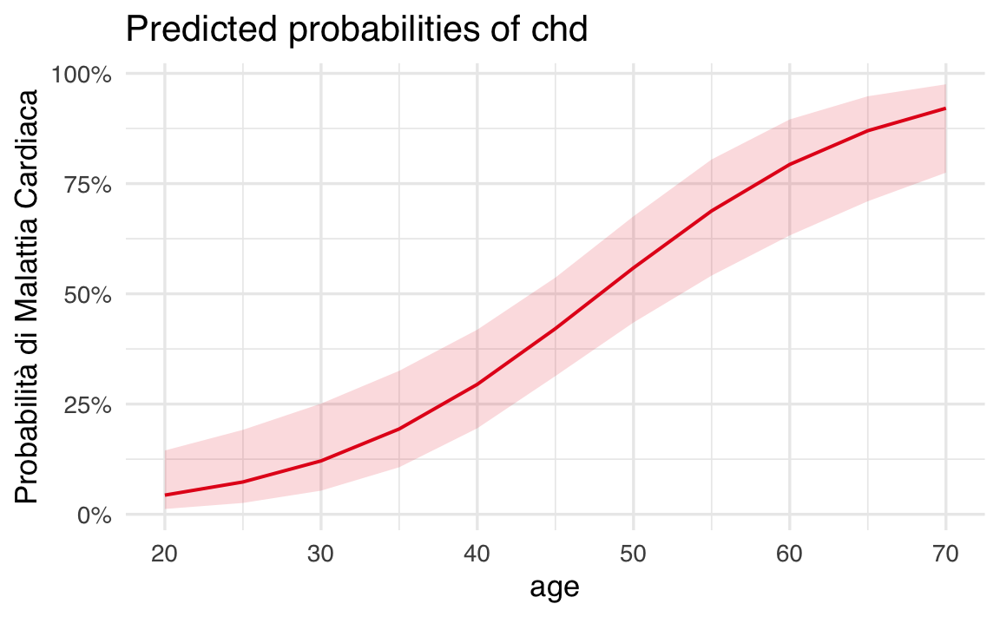

here::here("code", "_common.R") |>
source()
# Load packages
if (!requireNamespace("pacman")) install.packages("pacman")
pacman::p_load(
car, LaplacesDemon, gmodels, effects, psych, jtools, see, sjPlot
)63 Modello di Regressione Logistica
In questo capitolo imparerai:
- A comprendere le limitazioni del modello di regressione lineare applicato a variabili binarie.
- A conoscere il modello di regressione logistica e i suoi componenti principali: aleatoria, sistematica e funzione di legame.
- A interpretare i coefficienti della regressione logistica in termini di logit, odds ratio e probabilità.
- A calcolare e visualizzare le probabilità predette utilizzando modelli logistici in R.
- A distinguere tra il modello lineare nei logit e il modello non lineare nelle probabilità.
Prerequisiti
- Si consiglia di ripassare i concetti fondamentali dell’analisi di regressione. Per approfondire, si rimanda al materiale didattico dell’insegnamento di Psicometria disponibile al seguente link.
Preparazione del Notebook
63.1 Introduzione
Prima di affrontare i modelli parametrici e non parametrici della Teoria della Risposta all’Item (IRT), è fondamentale acquisire una solida comprensione del modello di regressione logistica. Questo modello, ampiamente utilizzato per l’analisi di dati categorici, rappresenta un punto di riferimento cruciale per comprendere i principi che i modelli IRT sviluppano ed estendono.
La regressione logistica consente di stimare la probabilità di un evento in funzione di una o più variabili predittive, fornendo una base teorica utile per interpretare la probabilità che un esaminando risponda correttamente a un item. Tuttavia, mentre il modello di regressione logistica si limita a considerare la relazione tra le variabili predittive e l’evento, i modelli IRT aggiungono un livello di complessità: integrano l’abilità individuale dell’esaminando e le caratteristiche specifiche degli item, permettendo un’analisi più articolata.
Nonostante alcune similitudini, i modelli IRT si differenziano profondamente dalla regressione logistica. Essi non solo modellano simultaneamente le proprietà degli item e le abilità degli individui, ma considerano anche le interdipendenze tra le risposte agli item e tra gli item stessi, superando l’assunzione di indipendenza tra le osservazioni tipica della regressione logistica.
In questo capitolo, esploreremo il modello di regressione logistica come punto di partenza per comprendere le basi teoriche e applicative dei modelli IRT, fornendo una transizione chiara e graduale verso l’approfondimento di questa teoria fondamentale.
63.2 Modello di Regressione Logistica per Variabili Binarie
La regressione logistica è uno strumento utile per analizzare la relazione tra una variabile dipendente dicotomica (che assume due valori, ad esempio “successo” e “fallimento”) e una o più variabili indipendenti (che possono essere sia quantitative che qualitative). È particolarmente utile per modellare situazioni in cui vogliamo stimare la probabilità che un evento si verifichi in base alle caratteristiche di un individuo o di una situazione.
63.2.1 Definizione del Modello
Consideriamo \(n\) osservazioni indipendenti, dove \(Y_i\) rappresenta l’osservazione \(i\)-esima della variabile dipendente (ad esempio, “successo” o “fallimento”), con \(i = 1, \dots, n\). Ogni osservazione è associata a un insieme di variabili esplicative \((x_{1}, \dots, x_{p})\). L’obiettivo è stimare la probabilità di successo, denotata con \(\pi_i\), data la combinazione delle variabili esplicative:
\[ P(Y = 1 \mid X = x_i) = \pi_i. \]
In questo contesto, \(Y\) segue una distribuzione di Bernoulli, quindi può assumere solo due valori:
\[ y_i = \begin{cases} 1 & \text{se si verifica un successo (osservazione $i$)}, \\ 0 & \text{se si verifica un fallimento.} \end{cases} \]
Le probabilità associate sono:
- \(\pi_i\) per il successo,
- \(1 - \pi_i\) per il fallimento.
La media condizionata \(\mathbb{E}(Y \mid X = x)\) rappresenta la probabilità attesa di successo per un dato valore \(x\) delle variabili esplicative:
\[ \mathbb{E}(Y \mid X = x) = \pi_i. \]
63.2.2 Esempio Pratico
Immaginiamo un dataset con 100 soggetti, in cui:
-
ageè una variabile esplicativa che indica l’età, -
chdè la variabile dipendente che indica la presenza (chd = 1) o l’assenza (chd = 0) di disturbi cardiaci.
La probabilità condizionata \(\pi_i\) indica la probabilità di osservare disturbi cardiaci in un certo gruppo d’età:
\[ \pi_i = P(Y = 1 \mid X = x). \]
Per valori discreti della variabile age, possiamo calcolare la proporzione di individui con \(Y = 1\) (cioè con disturbi cardiaci) per ogni gruppo di età. Queste proporzioni rappresentano una stima non parametrica della funzione di regressione tra chd e age.
63.2.3 Visualizzazione dei Dati
Con il dataset, possiamo calcolare queste proporzioni e rappresentarle graficamente:
chdage <- rio::import(
here::here("data", "logistic_reg", "chdage_dat.txt")
)
# Calcolo delle proporzioni di Y = 1 (chd) per età
prop_data <- chdage %>%
group_by(age) %>%
summarise(prop_chd = mean(chd))
# Creazione del grafico con smoothing
ggplot(prop_data, aes(x = age, y = prop_chd)) +
geom_point() + # Punti proporzione
geom_smooth(method = "loess", span = 0.7) + # Smoothing LOESS
labs(
title = "Relazione tra Età e Disturbi Cardiaci",
x = "Età",
y = "Proporzione di CHD = 1"
)63.2.4 Interpretazione della Relazione
Osservando il grafico:
- Per valori bassi di
age, la proporzione diY = 1(presenza di disturbi cardiaci) è vicina a 0. - Per valori elevati di
age, la proporzione diY = 1tende a 1. - Per valori intermedi di
age, la proporzione aumenta gradualmente, seguendo un andamento sigmoidale.
Questo andamento riflette la natura probabilistica del fenomeno: la probabilità di disturbi cardiaci cresce con l’età, ma non è una crescita lineare.
63.2.5 Vantaggio del Modello Logistico
Sebbene la stima non parametrica (ad esempio LOESS) possa fornire un quadro generale, la regressione logistica permette di modellare questa relazione utilizzando una semplice funzione. Questo approccio è particolarmente vantaggioso quando ci sono più variabili esplicative, consentendo di quantificare come ciascuna contribuisce alla probabilità di un evento.
63.3 Modello Lineare nelle Probabilità
Il modello lineare nelle probabilità rappresenta un primo approccio per descrivere la relazione tra una variabile dipendente binaria (ad esempio “successo” o “fallimento”) e una variabile indipendente continua o categoriale. La sua formulazione è data da:
\[ Y_i = \alpha + \beta X_i + \varepsilon_i, \]
dove:
- \(\alpha\) è l’intercetta,
- \(\beta\) è il coefficiente di regressione,
- \(\varepsilon_i\) rappresenta l’errore, che si assume distribuito normalmente con media 0 e varianza costante (\(\varepsilon_i \sim \mathcal{N}(0, 1)\)).
Il valore atteso di \(Y_i\) è quindi
\[\mathbb{E}(Y_i) = \alpha + \beta X_i,\]
che porta alla stima della probabilità di successo \(\pi_i\) come:
\[ \pi_i = \alpha + \beta X_i. \]
63.3.1 Limiti del Modello Lineare nelle Probabilità
Nonostante la semplicità, il modello lineare nelle probabilità presenta alcune problematiche.
Valori predetti fuori dall’intervallo [0,1]. Poiché \(\pi_i = \alpha + \beta X_i\) è una funzione lineare, i valori predetti di \(\pi_i\) possono essere negativi o superiori a 1, il che è incompatibile con l’interpretazione di \(\pi_i\) come probabilità.
Assunzione di normalità degli errori. La variabile dipendente \(Y_i\) è binaria (0 o 1), ma l’errore \(\varepsilon_i\) non segue una distribuzione normale. Ad esempio, se \(Y_i = 1\), l’errore sarà:
\[ \varepsilon_i = 1 - \mathbb{E}(Y_i) = 1 - (\alpha + \beta X_i) = 1 - \pi_i. \]
Analogamente, se \(Y_i = 0\), l’errore sarà:
\[ \varepsilon_i = 0 - \mathbb{E}(Y_i) = 0 - (\alpha + \beta X_i) = - \pi_i. \]
Pertanto, gli errori sono dicotomici e non normali.
- Problemi di omoschedasticità.
Nel modello lineare nelle probabilità, la varianza degli errori dipende dalla media \(\pi_i\), quindi non è costante. La varianza degli errori si calcola come:
\[ \mathbb{V}(\varepsilon_i) = (1-\pi_i)\pi_i. \] dove \(\pi_i\) varia in funzione di \(X_i\). Dato che \(\pi_i\) dipende da \(x\), ciò significa che la varianza non è costante in funzione di \(x\). Questa eteroschedasticità viola una delle assunzioni fondamentali del metodo dei minimi quadrati.
- Linearità irrealistica. La relazione tra \(X_i\) e la probabilità di successo non è sempre lineare nella realtà. Ad esempio, per valori estremi di \(X_i\), una relazione lineare può portare a predizioni improbabili (valori negativi o superiori a 1) e non cattura l’andamento sigmoidale tipico di molti fenomeni.
63.4 Modello Lineare nelle Probabilità Vincolato
Un tentativo di risolvere il problema dei valori predetti fuori dall’intervallo [0,1] consiste nell’introdurre vincoli:
\[ \pi= \begin{cases} 0 &\text{se $\alpha + \beta X < 0$},\\ \alpha + \beta X &\text{se $0 \leq \alpha + \beta X \leq 1$},\\ 1 &\text{se $\alpha + \beta X > 1$}. \end{cases} \]
Tuttavia, questo approccio presenta diversi limiti:
- Dipendenza critica dai valori estremi di \(\pi\): I valori di \(\pi = 0\) e \(\pi = 1\) dipendono fortemente dai valori più bassi e più alti di \(X_i\), che possono variare tra campioni.
- Cambiamenti bruschi nella pendenza: La curva di regressione subisce variazioni improvvise vicino agli estremi, risultando poco realistica.
- Complicazioni con più variabili esplicative: Quando il numero di variabili indipendenti aumenta, il modello diventa instabile e difficile da interpretare.
63.5 Regressione Logistica
La regressione logistica offre una soluzione efficace per modellare probabilità, garantendo che i valori previsti siano sempre compresi nell’intervallo \([0,1]\). Invece di specificare un modello direttamente per le probabilità condizionate \(\pi_i\), si definisce un modello lineare per una loro trasformazione: il logaritmo degli odds, noto come logit. Questa trasformazione risolve il problema del vincolo imposto dall’intervallo delle probabilità.
63.5.1 Modello Logistico e Logit
Il logit, definito come il logaritmo naturale del rapporto tra probabilità di successo e probabilità di fallimento, è dato da:
\[ \eta_i = \log_e \frac{\pi_i}{1-\pi_i} = \alpha + \beta x_i, \]
dove:
- \(\eta_i\) è il logit, sempre un numero reale,
- \(\alpha\) e \(\beta\) sono i parametri del modello,
- \(x_i\) è la variabile esplicativa.
Questo approccio consente di modellare \(\pi_i\) come una funzione non lineare di \(x_i\), espressa dalla funzione logistica:
\[ \pi_i = \frac{1}{1 + e^{-(\alpha + \beta x_i)}}. \]
63.5.2 Caratteristiche del Modello Logistico
Il modello logistico presenta i seguenti vantaggi:
- Intervallo limitato: garantisce che \(\pi_i\) sia sempre compreso tra 0 e 1.
- Relazione sigmoidale: rappresenta una transizione fluida tra probabilità basse e alte in funzione di \(x_i\).
- Adatto a variabili dicotomiche: rispetta la natura della variabile dipendente.
63.5.3 Relazione tra Probabilità, Odds e Logit
La relazione tra probabilità (\(P\)), odds (\(O\)) e logit (\(L\)) è illustrata nella tabella seguente:
| Probabilità (\(P\)) | Odds (\(O = P / (1-P)\)) | Logit (\(L = \ln(O)\)) |
|---|---|---|
| 0.01 | 0.01 / 0.99 = 0.0101 | \(-4.60\) |
| 0.50 | 0.50 / 0.50 = 1.0000 | \(0.00\) |
| 0.99 | 0.99 / 0.01 = 99.0000 | \(4.60\) |
Il logit trasforma l’intervallo \([0,1]\) della probabilità in tutta la linea reale, semplificando l’uso di modelli lineari.
63.5.4 Logit Empirici e Relazione Lineare
Per visualizzare la relazione tra variabili trasformate, è possibile calcolare i logit empirici. Consideriamo un esempio con 8 intervalli della variabile age, calcolando il logit degli odds per ciascun gruppo. La relazione risultante è lineare, come mostrato dal seguente codice:
dat1 <- chdage %>%
mutate(age_c = ntile(age, 8)) %>%
group_by(age_c) %>%
summarise(
age_bin_center = (min(age) + max(age)) / 2,
proportion_heart_disease = mean(chd)
)
xc <- dat1$age_bin_center
yc <- dat1$proportion_heart_disease
logit_y <- log(yc / (1 - yc))
fit <- lm(logit_y ~ xc)
plot(
xc, logit_y,
xlab = "Età", ylab = "Logit(Y)",
main = "Relazione Lineare tra Logit e Età", type = "n"
)
points(xc, logit_y, cex = 2)
abline(fit)63.5.5 Modello Logistico Applicato
Utilizzando un modello logistico, possiamo rappresentare l’andamento sigmoidale della probabilità condizionata:
\[ \pi_i = \frac{e^{\alpha + \beta x_i}}{1 + e^{\alpha + \beta x_i}}. \]
In R, il modello può essere stimato come segue:
fm <- glm(chd ~ age, family = binomial(link = "logit"), data = chdage)
logit_hat <- fm$coef[1] + fm$coef[2] * chdage$age
pi_hat <- exp(logit_hat) / (1 + exp(logit_hat))
plot(chdage$age, pi_hat,
xlab = "Età",
ylab = "P(CHD)",
main = "Probabilità di Malattia Cardiaca", type = "n"
)
lines(chdage$age, pi_hat)
points(dat1$age_bin_center, dat1$proportion_heart_disease, cex = 2)Un’alternativa per visualizzare i risultati è l’uso del pacchetto sjPlot:
plot_model(fm, type = "pred", terms = "age") +
labs(y = "Probabilità di Malattia Cardiaca")
In conclusione, la regressione logistica rappresenta un metodo robusto e flessibile per modellare probabilità, superando i limiti del modello lineare nelle probabilità. La sua capacità di rappresentare relazioni non lineari e rispettare i vincoli probabilistici la rende ideale per l’analisi di variabili dipendenti binarie.
63.6 Modelli Lineari Generalizzati (GLM)
I Modelli Lineari Generalizzati (GLM) rappresentano una potente estensione del modello lineare classico, progettata per affrontare i limiti che emergono con variabili risposta di natura non continua o con varianze non costanti. Nel caso di una variabile risposta binaria, come nel modello di regressione logistica, il modello lineare classico incontra diverse difficoltà:
- Distribuzione Binomiale: La variabile risposta \(Y_i\) segue una distribuzione binomiale (con parametro \(n_i\), tipicamente \(n_i = 1\) per dati individuali), incompatibile con l’assunzione di normalità.
- Vincoli sulle Probabilità: Specificare un modello lineare come \(\pi_i = \beta_0 + \beta_1 x_i\) può portare a stime di probabilità fuori dall’intervallo \([0,1]\).
- Varianze Non Costanti: La varianza dei residui, calcolata come \(V(\varepsilon_i) = \pi_i (1 - \pi_i)\), varia in funzione di \(\pi_i\).
I GLM affrontano queste sfide consentendo di specificare una relazione tra la media attesa della variabile risposta e le variabili esplicative attraverso una funzione di legame. Questi modelli includono varianti come:
- Regressione Lineare: Per variabili dipendenti continue.
- Regressione Logistica: Per variabili risposta binarie.
- Modello Loglineare di Poisson: Per conteggi o frequenze in tabelle di contingenza.
63.6.1 Struttura dei GLM
Un GLM si compone di tre elementi principali:
-
Componente Aleatoria: Specifica la distribuzione della variabile risposta \(Y_i\), ad esempio:
- Normale per variabili continue,
- Binomiale per variabili binarie,
- Poisson per conteggi.
-
Componente Sistematica: Definisce la relazione lineare tra le variabili esplicative e una trasformazione della media attesa della variabile risposta. È rappresentata dal predittore lineare:
\[ \eta_i = \alpha + \sum_{j} \beta_j X_{ij}. \]
Funzione di Legame: Trasforma la media attesa \(\mathbb{E}(Y_i)\) in modo che sia modellata linearmente rispetto a \(\eta_i\). Ad esempio, nella regressione logistica, il legame è dato dal logit.
| Componente Aleatoria | Funzione di Legame | Applicazione |
|---|---|---|
| Gaussiana | Identità | Regressione lineare |
| Binomiale | Logit | Regressione logistica |
| Poisson | Logaritmo | Modello loglineare |
63.6.2 Componente Sistematica
La componente sistematica descrive come le variabili esplicative (\(X_{ij}\)) influenzano il predittore lineare \(\eta_i\). Per \(k\) osservazioni e \(p\) variabili esplicative, il predittore lineare è definito come:
\[ \eta_i = \alpha + \sum_{j} \beta_j X_{ij}, \]
dove:
- \(\alpha\) è l’intercetta,
- \(\beta_j\) sono i coefficienti delle variabili esplicative.
63.6.3 Componente Aleatoria
La componente aleatoria assume che le osservazioni \(Y_i\) siano realizzazioni indipendenti di una variabile casuale. Per una variabile risposta binaria:
\[ Y_i \sim \text{Bin}(n_i, \pi_i), \]
dove \(n_i = 1\) per dati individuali.
63.6.4 Funzione di Legame
La funzione di legame \(g(\cdot)\) connette la media attesa \(\mathbb{E}(Y_i) = \pi_i\) alla componente sistematica \(\eta_i\). Per la regressione logistica, il legame è dato dal logit:
\[ \eta_i = g(\pi_i) = \ln\left(\frac{\pi_i}{1-\pi_i}\right). \]
La funzione legame è invertibile, consentendo di esprimere la probabilità \(\pi_i\) come funzione del predittore lineare:
\[ \pi_i = \frac{e^{\eta_i}}{1 + e^{\eta_i}} = \frac{e^{\alpha + \sum_j \beta_j X_{ij}}}{1 + e^{\alpha + \sum_j \beta_j X_{ij}}}. \]
Questa relazione permette di ottenere un modello non lineare per le probabilità \(\pi_i\).
63.6.5 Visualizzazione della Funzione Logistica
La funzione logistica, che rappresenta il legame tra il predittore lineare \(\eta_i\) e la probabilità \(\pi_i\), ha un andamento sigmoidale:
63.6.6 Applicazioni dei GLM
I GLM sono particolarmente utili in contesti in cui:
- La variabile risposta non è continua (es. binaria o discreta),
- Le varianze non sono costanti,
- La relazione tra media e predittore è non lineare.
Nella regressione logistica, la combinazione di queste componenti consente di descrivere in modo accurato la probabilità di successo in funzione delle variabili esplicative.
63.7 Regressione Logistica con R
La regressione logistica può essere implementata in R utilizzando la funzione glm() (Generalized Linear Model). Questo metodo consente di stimare i parametri del modello, tenendo conto della distribuzione della variabile risposta e della funzione di legame appropriata.
Per stimare i parametri del modello sui dati dell’esempio, si utilizza il seguente codice:
-
family = binomial: Specifica che la variabile risposta segue una distribuzione binomiale (necessaria per una variabile binaria comechd). -
link = "logit": Indica che la funzione di legame utilizzata è il logit.
L’output del modello può essere visualizzato con la funzione summary():
summary(fm)
#>
#> Call:
#> glm(formula = chd ~ age, family = binomial(link = "logit"), data = chdage)
#>
#> Coefficients:
#> Estimate Std. Error z value Pr(>|z|)
#> (Intercept) -5.3095 1.1337 -4.68 2.8e-06
#> age 0.1109 0.0241 4.61 4.0e-06
#>
#> (Dispersion parameter for binomial family taken to be 1)
#>
#> Null deviance: 136.66 on 99 degrees of freedom
#> Residual deviance: 107.35 on 98 degrees of freedom
#> AIC: 111.4
#>
#> Number of Fisher Scoring iterations: 4L’output mostra i coefficienti stimati (\(\alpha\) e \(\beta\)), i loro errori standard e altre statistiche. Per i dati dell’esempio, i risultati principali sono:
- Intercetta (\(\alpha = -5.309\)): Indica il log-odds di sviluppare CHD a età 0.
- Coefficiente di Età (\(\beta = 0.111\)): Indica come i log-odds di CHD cambiano per ogni anno aggiuntivo di età.
Le equazioni risultanti sono:
Logit stimato:
\[ \hat{\eta}(x) = -5.309 + 0.111 \cdot \text{age}. \]Probabilità stimata:
\[ \hat{\pi}(x) = \frac{e^{-5.309 + 0.111 \cdot \text{age}}}{1 + e^{-5.309 + 0.111 \cdot \text{age}}}. \]
63.7.1 Interpretazione dei Coefficienti
La comprensione dei coefficienti del modello di regressione logistica può essere suddivisa in tre livelli: log-odds, odds ratio e probabilità predette.
63.7.2 Interpretazione Basata sui Log-Odds
-
Intercetta (\(-5.309\)):
- Rappresenta i log-odds di sviluppare CHD quando l’età è 0.
- Un valore negativo suggerisce che la probabilità di CHD è molto bassa a età 0.
-
Coefficiente di Età (\(0.111\)):
- Ogni anno aggiuntivo di età aumenta i log-odds di CHD di 0.111.
- Un coefficiente positivo indica che il rischio di CHD aumenta con l’età.
- Ogni anno aggiuntivo di età aumenta i log-odds di CHD di 0.111.
63.7.3 Interpretazione Attraverso l’Odds Ratio
Per una comprensione più intuitiva, il coefficiente di età può essere trasformato in un odds ratio esponenziando il valore del coefficiente:
\[ \text{Odds Ratio per Età} = e^{0.111} \approx 1.12. \]
-
Significato:
- Un odds ratio di 1.12 implica che per ogni anno di età in più, gli odds di sviluppare CHD aumentano del 12%.
- Se l’odds ratio fosse pari a 1, ciò indicherebbe che l’età non influisce sul rischio di CHD.
63.7.4 Interpretazione Basata sulle Probabilità Predette
Il modo più diretto per interpretare l’impatto delle variabili esplicative è attraverso le probabilità predette. Le probabilità mostrano come il rischio di CHD varia con l’età.
Possiamo calcolare e visualizzare le probabilità predette per diverse età utilizzando il pacchetto jtools con la funzione effect_plot():
effect_plot(fm,
pred = age, interval = TRUE, plot.points = TRUE,
jitter = 0.05
)-
pred = age: Indica che vogliamo calcolare le probabilità predette in funzione diage. -
interval = TRUE: Aggiunge intervalli di confidenza per le stime. -
plot.points = TRUE: Mostra i punti osservati sui dati originali.
Questo grafico rappresenta la relazione sigmoidale tra età e probabilità di CHD, fornendo una rappresentazione intuitiva e accessibile anche a chi non ha una formazione avanzata in statistica.
In conclusione, la regressione logistica in R, tramite glm(), è uno strumento versatile per analizzare variabili binarie. L’interpretazione dei coefficienti attraverso log-odds, odds ratio e probabilità predette offre molteplici prospettive utili per comprendere l’effetto delle variabili esplicative e comunicare i risultati in modo chiaro ed efficace.
63.8 Riflessioni Conclusive
Nel caso di una variabile dipendente binaria \(Y_i\), il tradizionale modello di regressione lineare risulta inadatto, principalmente a causa della natura discreta di \(Y_i\), della varianza non costante e della necessità di vincolare i valori predetti all’intervallo \([0, 1]\). Queste limitazioni vengono superate applicando un modello lineare non direttamente alla probabilità \(\pi_i\) (il valore atteso di \(Y_i\)), ma a una sua trasformazione: il logit.
Nel modello di regressione logistica, la componente sistematica esprime i logit, definiti come il logaritmo naturale degli odds, come una funzione lineare dei predittori:
\[ \ln \frac{\pi_i}{1-\pi_i} = \alpha + \beta X_i. \]
Questo rende il modello lineare nei logit, semplificando la relazione tra variabili esplicative e odds. La funzione logit è invertibile, e la trasformazione inversa (antilogit) consente di esprimere le probabilità \(\pi_i\) in funzione del predittore lineare \(\eta_i = \alpha + \beta X_i\):
\[ \pi_i = \frac{\exp(\alpha + \beta X_i)}{1 + \exp(\alpha + \beta X_i)}. \]
Questa relazione rende il modello non lineare rispetto alle probabilità, ma garantisce che i valori predetti rimangano nell’intervallo \([0, 1]\).
Nel contesto della regressione logistica, il valore atteso della variabile dipendente \(Y_i\), condizionato ai valori dei predittori, rappresenta la probabilità che \(Y_i\) assuma il valore 1:
\[ \mathbb{E}(Y \mid x_i) = Pr(Y = 1 \mid X = x_i) \equiv \pi_i. \]
Questo valore può essere interpretato come la proporzione di individui nella popolazione con \(Y = 1\) per una data combinazione di valori \(X = x_i\).
La componente aleatoria del modello considera \(Y_i\) come una variabile aleatoria binomiale, con due scenari principali:
- Dati raggruppati: Quando le osservazioni sono aggregate, la variabile risposta segue una distribuzione binomiale con parametro \(n_i\), dove \(n_i\) rappresenta il numero di osservazioni per ogni gruppo omogeneo di predittori.
- Dati individuali: Quando ogni osservazione è indipendente, \(n_i = 1\) per tutte le unità.
La funzione logistica:
\[ \Lambda(\eta) = \frac{\exp(\eta)}{1 + \exp(\eta)}, \]
è stata scelta come funzione di legame per trasformare il predittore lineare \(\eta_i = \alpha + \beta X_i\) nelle probabilità \(\pi_i\). Questa funzione è preferita per la sua semplicità interpretativa e per il fatto che produce un andamento sigmoidale, che descrive bene molte relazioni probabilistiche.
In conclusione, il modello di regressione logistica risolve elegantemente le limitazioni del modello lineare applicato a variabili binarie, fornendo un approccio flessibile e interpretabile:
- Lineare nei logit: Il modello sfrutta la semplicità di una relazione lineare per descrivere log-odds.
- Non lineare nelle probabilità: La funzione logistica garantisce che le probabilità predette siano sempre comprese nell’intervallo \([0, 1]\).
- Adatto a variabili binarie: La componente aleatoria binomiale riflette la natura discreta della variabile dipendente.
Questo modello si dimostra particolarmente utile in ambiti dove le variabili risposta sono dicotomiche, offrendo interpretazioni intuitive tramite logit, odds e probabilità. La sua flessibilità consente di essere applicato sia a dati individuali sia a dati raggruppati, rendendolo uno strumento fondamentale per analisi statistiche moderne.
63.9 Session Info
sessionInfo()
#> R version 4.4.2 (2024-10-31)
#> Platform: aarch64-apple-darwin20
#> Running under: macOS Sequoia 15.3.1
#>
#> Matrix products: default
#> BLAS: /Library/Frameworks/R.framework/Versions/4.4-arm64/Resources/lib/libRblas.0.dylib
#> LAPACK: /Library/Frameworks/R.framework/Versions/4.4-arm64/Resources/lib/libRlapack.dylib; LAPACK version 3.12.0
#>
#> locale:
#> [1] C/UTF-8/C/C/C/C
#>
#> time zone: Europe/Rome
#> tzcode source: internal
#>
#> attached base packages:
#> [1] stats graphics grDevices utils datasets methods base
#>
#> other attached packages:
#> [1] sjPlot_2.8.17 jtools_2.3.0 effects_4.2-2
#> [4] gmodels_2.19.1 LaplacesDemon_16.1.6 car_3.1-3
#> [7] carData_3.0-5 ggokabeito_0.1.0 see_0.10.0
#> [10] MASS_7.3-65 viridis_0.6.5 viridisLite_0.4.2
#> [13] ggpubr_0.6.0 ggExtra_0.10.1 gridExtra_2.3
#> [16] patchwork_1.3.0 bayesplot_1.11.1 semTools_0.5-6
#> [19] semPlot_1.1.6 lavaan_0.6-19 psych_2.4.12
#> [22] scales_1.3.0 markdown_1.13 knitr_1.49
#> [25] lubridate_1.9.4 forcats_1.0.0 stringr_1.5.1
#> [28] dplyr_1.1.4 purrr_1.0.4 readr_2.1.5
#> [31] tidyr_1.3.1 tibble_3.2.1 ggplot2_3.5.1
#> [34] tidyverse_2.0.0 here_1.0.1
#>
#> loaded via a namespace (and not attached):
#> [1] splines_4.4.2 later_1.4.1 R.oo_1.27.0
#> [4] datawizard_1.0.0 XML_3.99-0.18 rpart_4.1.24
#> [7] lifecycle_1.0.4 Rdpack_2.6.2 rstatix_0.7.2
#> [10] rprojroot_2.0.4 globals_0.16.3 lattice_0.22-6
#> [13] insight_1.0.2 rockchalk_1.8.157 backports_1.5.0
#> [16] survey_4.4-2 magrittr_2.0.3 openxlsx_4.2.8
#> [19] Hmisc_5.2-2 rmarkdown_2.29 httpuv_1.6.15
#> [22] qgraph_1.9.8 zip_2.3.2 RColorBrewer_1.1-3
#> [25] pbapply_1.7-2 DBI_1.2.3 minqa_1.2.8
#> [28] multcomp_1.4-28 abind_1.4-8 quadprog_1.5-8
#> [31] R.utils_2.13.0 nnet_7.3-20 TH.data_1.1-3
#> [34] sandwich_3.1-1 listenv_0.9.1 gdata_3.0.1
#> [37] arm_1.14-4 performance_0.13.0 parallelly_1.42.0
#> [40] codetools_0.2-20 tidyselect_1.2.1 ggeffects_2.2.0
#> [43] farver_2.1.2 lme4_1.1-36 broom.mixed_0.2.9.6
#> [46] stats4_4.4.2 base64enc_0.1-3 jsonlite_1.9.0
#> [49] Formula_1.2-5 survival_3.8-3 emmeans_1.10.7
#> [52] tools_4.4.2 rio_1.2.3 Rcpp_1.0.14
#> [55] glue_1.8.0 mnormt_2.1.1 mgcv_1.9-1
#> [58] xfun_0.51 withr_3.0.2 fastmap_1.2.0
#> [61] mitools_2.4 boot_1.3-31 digest_0.6.37
#> [64] mi_1.1 timechange_0.3.0 R6_2.6.1
#> [67] mime_0.12 estimability_1.5.1 colorspace_2.1-1
#> [70] gtools_3.9.5 jpeg_0.1-10 R.methodsS3_1.8.2
#> [73] generics_0.1.3 data.table_1.17.0 corpcor_1.6.10
#> [76] htmlwidgets_1.6.4 pkgconfig_2.0.3 sem_3.1-16
#> [79] gtable_0.3.6 furrr_0.3.1 htmltools_0.5.8.1
#> [82] png_0.1-8 snakecase_0.11.1 reformulas_0.4.0
#> [85] rstudioapi_0.17.1 tzdb_0.4.0 reshape2_1.4.4
#> [88] coda_0.19-4.1 checkmate_2.3.2 nlme_3.1-167
#> [91] nloptr_2.1.1 zoo_1.8-13 sjlabelled_1.2.0
#> [94] parallel_4.4.2 miniUI_0.1.1.1 foreign_0.8-88
#> [97] pillar_1.10.1 grid_4.4.2 vctrs_0.6.5
#> [100] promises_1.3.2 OpenMx_2.21.13 xtable_1.8-4
#> [103] cluster_2.1.8 htmlTable_2.4.3 evaluate_1.0.3
#> [106] pbivnorm_0.6.0 mvtnorm_1.3-3 cli_3.6.4
#> [109] kutils_1.73 compiler_4.4.2 rlang_1.1.5
#> [112] ggsignif_0.6.4 labeling_0.4.3 fdrtool_1.2.18
#> [115] plyr_1.8.9 sjmisc_2.8.10 stringi_1.8.4
#> [118] pander_0.6.6 munsell_0.5.1 lisrelToR_0.3
#> [121] pacman_0.5.1 Matrix_1.7-2 sjstats_0.19.0
#> [124] hms_1.1.3 glasso_1.11 future_1.34.0
#> [127] shiny_1.10.0 haven_2.5.4 rbibutils_2.3
#> [130] igraph_2.1.4 broom_1.0.7 RcppParallel_5.1.10